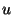

CM keeps compiled code within the same directory tree that contains the corresponding ML source code. Thus, there is a fixed function that maps the names of source files to the names of corresponding binfiles and the names of CM description files (for libraries) to their corresponding stable files.
As a result, these files will be shared between programs that use the same libraries. Moreover, CM will let different programs that are loaded into an interactive session at the same time share their in-memory copies of common compiled modules. (There is also an issue of state-sharing, but this does not concern CMB because the bootstrap compiler only compiles code without linking it.)
Sharing of code is useful for ordinary usage, but when compiling the compiler itself, it is not desirable. During bootstrap compilation, it is often the case that several different versions of compiled code have to coexist. Some, or even all of these versions can differ significantly from those of the currently running system.
Therefore, CMB keeps binfiles and stable files in separate directory trees. The names of the directories where these trees are rooted at are constructed from three parts; the binfile directory's name is .bin. arch- os and the stablefile directory's name is .boot. arch- os. As mentioned before, arch is a string describing the current CPU architecture and os is a string describing the current operating system kind. Component is a string that can be selected freely when the bootstrap compiler is invoked. When using CMB.make it defaults to sml, otherwise it is the argument given to CMB.make'. (The component is kept variable to make it possible to keep and use several compiled versions of the system at the same time.)
The auxiliary script makeml (which is responsible for bootstrapping a new system) also accepts a parameters to select . If the parameter is missing, it defaults to sml (in accordance with CMB.make's behavior).